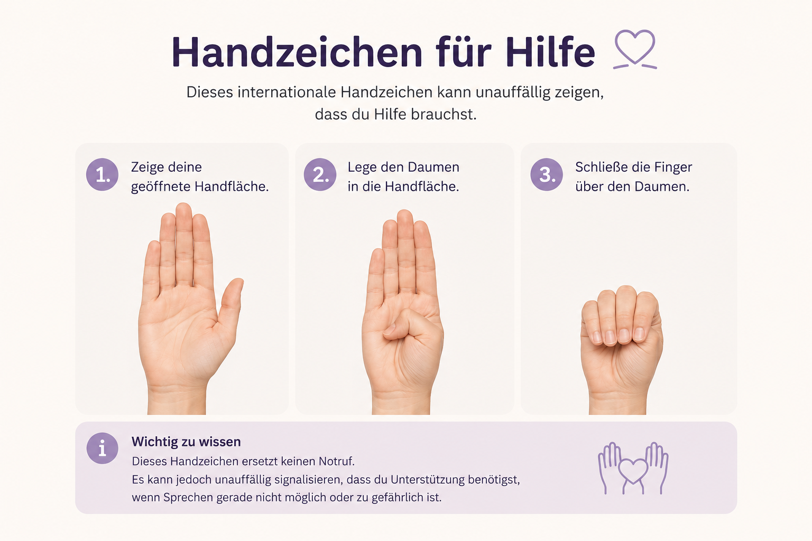

Du musst diesen Weg nicht alleine gehen.
Es braucht oft viel Mut, sich Unterstützung zu suchen. Vielleicht weißt du noch nicht genau, was du brauchst. Vielleicht möchtest du erst verstehen, was passiert ist. Oder du suchst ganz konkret nach einer Beratungsstelle oder einem sicheren Ort. Du musst das nicht alleine herausfinden. Auf dieser Seite findest du eine Übersicht über Notfallkontakte, Beratungsangebote und Hilfen vor Ort. Du entscheidest selbst, welcher Schritt sich für dich richtig anfühlt.
Wichtige Kontakte im Notfall
Wenn du dich gerade in einer akuten Gefahrensituation befindest oder sofort Unterstützung brauchst, können diese Anlaufstellen der erste Schritt sein. Du musst dir nicht sicher sein, ob das Erlebte „schlimm genug“ ist, um Hilfe in Anspruch zu nehmen.
Polizei
Notruf: 110
Wenn du oder eine andere Person akut bedroht wird oder sich in unmittelbarer Gefahr befindet.
Rettungsdienst
Notruf: 112
Bei medizinischen Notfällen oder wenn sofortige ärztliche Hilfe benötigt wird.
Hilfetelefon Gewalt gegen Frauen
116 016
Kostenlos, anonym und rund um die Uhr erreichbar.
Auch per Online-Beratung und Chat.
Hilfetelefon Gewalt an Männern
0800 123 9900
Kostenlose und vertrauliche Beratung für Männer,
die von Gewalt betroffen sind.
Nummer gegen Kummer
116 111
Beratung für Kinder,
Jugendliche und junge Erwachsene.
Auch Eltern können sich beraten lassen.
WEISSER RING
116 006
Unterstützung für Opfer von Straftaten,
Informationen über Rechte
und persönliche Begleitung.
Wichtig zu wissen
Du musst keine Anzeige erstattet haben, um Hilfe zu bekommen. Viele Beratungsstellen begleiten Menschen bereits dann, wenn sie ihre Situation erst einmal verstehen oder über das Erlebte sprechen möchten.
Welche Unterstützung suche ich?
Nicht jede Person sucht dieselbe Hilfe. Vielleicht brauchst du einen sicheren Ort. Vielleicht möchtest du einfach mit jemandem sprechen. Oder du suchst therapeutische Unterstützung. Hier findest du eine erste Orientierung.
Ich brauche einen sicheren Ort.
Frauenhäuser und Schutzwohnungen bieten Schutz, Unterkunft und Beratung für Frauen und ihre Kinder, die von häuslicher Gewalt betroffen sind.
Geeignet für:
Frauen und Kinder
Ich möchte mit jemandem sprechen.
Beratungsstellen helfen dabei, das Erlebte einzuordnen, Fragen zu beantworten und gemeinsam die nächsten Schritte zu planen.
Geeignet für:
Alle Betroffenen,
Angehörige und Unterstützende
Ich suche therapeutische Unterstützung.
Traumatherapeutische Angebote unterstützen dabei, belastende Erfahrungen zu verarbeiten und langfristig wieder Sicherheit im Alltag zu gewinnen.
Geeignet für:
Alle Betroffenen
Ich brauche rechtliche Informationen.
Hier findest du Unterstützung zu Anzeige, Opferrechten, Schutzmaßnahmen und weiteren rechtlichen Fragen.
Geeignet für:
Alle Betroffenen
Ich wurde Opfer einer Straftat.
Opferhilfeeinrichtungen begleiten Betroffene, informieren über Rechte und unterstützen bei den nächsten Schritten.
Geeignet für:
Alle Betroffenen
Das internationale Handzeichen für Hilfe
Nicht jede Person kann in einer gefährlichen Situation offen um Hilfe bitten. Das internationale Handzeichen für Hilfe wurde entwickelt, um unauffällig zu signalisieren, dass Unterstützung benötigt wird.

Das Handzeichen besteht aus drei einfachen Bewegungen:
- Zeige deine geöffnete Handfläche.
- Lege den Daumen in die Handfläche.
- Schließe anschließend die Finger über dem Daumen.
Das Handzeichen ersetzt keinen Notruf, kann aber anderen Menschen unauffällig zeigen, dass du Hilfe benötigst, wenn Sprechen gerade nicht möglich oder zu gefährlich ist.
Ich suche Hilfe in meiner Nähe.
Im nächsten Abschnitt findest du Hilfsangebote in Berlin und Dresden. Weitere Regionen werden nach und nach ergänzt.
Geeignet für:
Alle Betroffenen
Hilfsangebote in deiner Region
Neben den bundesweiten Hilfsangeboten gibt es viele Beratungsstellen, Schutzeinrichtungen und therapeutische Angebote direkt vor Ort. Wir beginnen mit Berlin und Dresden. Weitere Regionen werden nach und nach ergänzt.
Hilfsangebote in Berlin
Die folgenden Einrichtungen bieten Unterstützung für Menschen, die von häuslicher oder sexualisierter Gewalt betroffen sind. Alle Angebote arbeiten vertraulich.
Frauenhäuser
Schutz, Unterkunft und Beratung für Frauen und ihre Kinder, die von häuslicher Gewalt betroffen sind.
Geeignet für: Frauen und Kinder
FrauenhauskoordinierungBIG Hotline
Kostenlose Beratung bei häuslicher Gewalt. Auch für Angehörige und Fachkräfte.
Geeignet für: Betroffene, Angehörige und Unterstützende
BIG Hotline BerlinMännerhilfetelefon
Beratung für Männer, die häusliche oder sexualisierte Gewalt erlebt haben.
Geeignet für: Männer
MännerhilfetelefonWEISSER RING
Unterstützung für Opfer von Straftaten, Informationen zu Rechten und persönliche Begleitung.
Geeignet für: Alle Betroffenen
WEISSER RINGTraumatherapie
Nach belastenden oder traumatischen Erfahrungen kann eine spezialisierte Traumaambulanz oder Traumatherapie bei der Verarbeitung unterstützen.
Geeignet für:
Alle Betroffenen
Beratung für queere Menschen
Spezialisierte Beratungsangebote unterstützen LSBTIQ+-Personen nach Gewalt- oder Diskriminierungserfahrungen.
Geeignet für:
LSBTIQ+-Personen
Kinder & Jugendliche
Kinder und Jugendliche erhalten eigene Beratungs- und Schutzangebote, wenn sie Gewalt erlebt oder beobachtet haben.
Geeignet für:
Kinder, Jugendliche und ihre Bezugspersonen
Weitere Hilfsangebote
Eine Übersicht über viele weitere Berliner Beratungs- und Unterstützungsangebote findest du im offiziellen Hilfeportal für Betroffene.
Geeignet für:
Alle Betroffenen
Hilfsangebote in Dresden
Auch in Dresden gibt es zahlreiche Anlaufstellen für Menschen, die von häuslicher oder sexualisierter Gewalt betroffen sind. Die folgenden Angebote können eine erste Orientierung geben.
Frauenhäuser
Schutz, Unterkunft und Beratung für Frauen und ihre Kinder bei häuslicher Gewalt.
Geeignet für:
Frauen und Kinder
Opferhilfe Sachsen
Vertrauliche Beratung nach häuslicher, sexualisierter oder anderer Gewalt. Auch Angehörige können sich beraten lassen.
Geeignet für:
Alle Betroffenen
Traumaambulanz
Spezialisierte Unterstützung nach belastenden oder traumatischen Erfahrungen.
Geeignet für:
Alle Betroffenen
Beratung für Männer
Beratung und Schutzangebote für Männer, die von häuslicher Gewalt betroffen sind.
Geeignet für:
Männer
WEISSER RING
Unterstützung für Opfer von Straftaten, Begleitung und Informationen zu weiteren Hilfen.
Geeignet für:
Alle Betroffenen
Beratung für queere Menschen
Beratung und Unterstützung für LSBTIQ+-Personen nach Gewalt- oder Diskriminierungserfahrungen.
Geeignet für:
LSBTIQ+-Personen
Hilfe anzunehmen braucht Mut.
Es gibt keinen richtigen oder falschen Zeitpunkt, Unterstützung in Anspruch zu nehmen. Vielleicht möchtest du heute nur Informationen sammeln. Vielleicht entscheidest du dich morgen, mit einer Beratungsstelle Kontakt aufzunehmen. Jeder Schritt ist ein wichtiger Schritt.